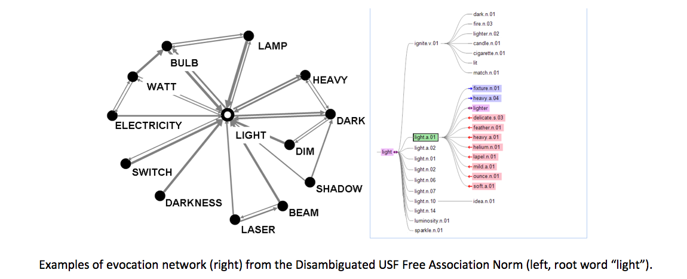

Abstract
Studies of lexical-semantic relations aim to understand the mechanism of semantic memory and the organization of the mental lexicon. However, standard paradigmatic relations such as “hypernym” and “hyponym” cannot capture connections among concepts from different parts of speech. WordNet, which organizes synsets (i.e. synonym sets) using these lexical-semantic relations, is rather sparse in its connectivity. According to WordNet statistics, the average number of outgoing/incoming arcs for the hypernym/hyponym relation per synset is 1.33. Evocation, defined as how much a concept (expressed by one or more words) brings to mind another, is proposed as a new directed and weighted measure for the semantic relatedness among concepts. Commonly applied semantic relations and relatedness measures do not seem to be fully compatible with data that reflect evocations among concepts. They are compatible but evocation captures MORE. This work aims to provide a reliable and extendable dataset of concepts evoked by, and evoking, other concepts to enrich WordNet, the existing semantic network. We propose the use of disambiguated free word association data (first responses to verbal stimuli) to infer and collect evocation ratings. WordNet aims to represent the organization of mental lexicon, and free word association which has been used by psycholinguists to explore semantic organization can contribute to the understanding. This work was carried out in two phases. In the first phase, it was confirmed that existing free word association norms can be converted into evocation data computationally. In the second phase, a two-stage association-annotation procedure of collecting evocation data from human judgment was compared to the state-of-the-art method, showing that introducing free association can greatly improve the quality of the evocation data generated. Evocation can be incorporated into WordNet as directed links with scales, and benefits various Natural Language Processing applications.
Materials
PDF |
Slides |
BibTeX